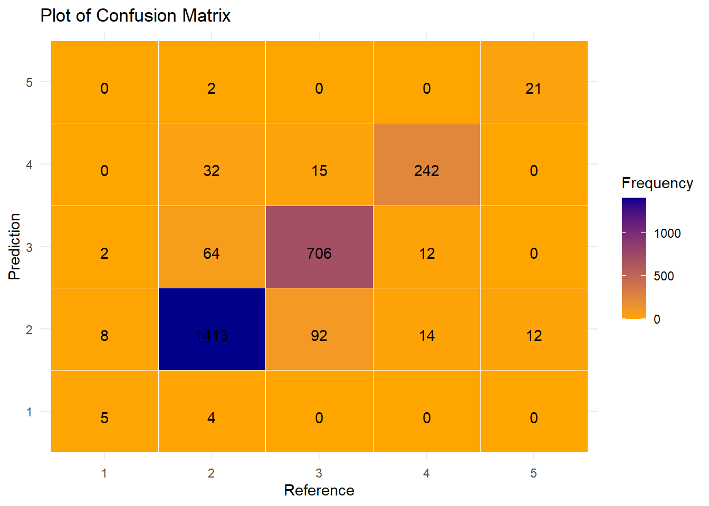

# Classification
# Install and load necessary packages
#if (!requireNamespace("class", quietly = TRUE)) {
# install.packages("class")
#}
#if (!requireNamespace("caret", quietly = TRUE)) {
# install.packages("caret")
#}
#if (!requireNamespace("ggplot2", quietly = TRUE)) {
# install.packages("ggplot2")
#}
#if (!requireNamespace("PRROC", quietly = TRUE)) {
# install.packages("PRROC")
#}
library(pROC)Warning: package 'pROC' was built under R version 4.2.3Type 'citation("pROC")' for a citation.
Attaching package: 'pROC'The following objects are masked from 'package:stats':
cov, smooth, varlibrary(PRROC)Warning: package 'PRROC' was built under R version 4.2.3library(class)Warning: package 'class' was built under R version 4.2.3library(caret)Warning: package 'caret' was built under R version 4.2.3Loading required package: ggplot2Warning: package 'ggplot2' was built under R version 4.2.3Loading required package: latticelibrary(ggplot2)
# Read in data
FitData2<-read.csv('Book3.csv')
#looking at the data
names(FitData2) [1] "AADT" "Latitude" "Longitude" "yn" "Divided"
[6] "LaneCount" "DGAC" "Latex" "SMA" "PCCP"
[11] "Age" "Friction" "Macro" "IRI" "Gradient"
[16] "Curvature" "LatitudeGPS" "LongitudeGps" "Crash" "lnAADT" # Split the dataset into training and testing sets
set.seed(123)
splitIndex <- createDataPartition(FitData2$LaneCount, p = 0.7, list = FALSE)
train_data <- FitData2[splitIndex, ]
test_data <- FitData2[-splitIndex, ]
# Define the number of neighbors (k) for the KNN model
k <- 9
# Train the KNN model
knn_model <- knn(train = train_data[, 1:4], test = test_data[, 1:4], cl = train_data$LaneCount, k = k)
# Create a confusion matrix
conf_matrix <- confusionMatrix(knn_model, as.factor(test_data$LaneCount))
# Display the confusion matrix
print(conf_matrix)Confusion Matrix and Statistics
Reference
Prediction 1 2 3 4 5
1 5 4 0 0 0
2 8 1413 92 14 12
3 2 64 706 12 0
4 0 32 15 242 0
5 0 2 0 0 21
Overall Statistics
Accuracy : 0.9028
95% CI : (0.8909, 0.9138)
No Information Rate : 0.573
P-Value [Acc > NIR] : < 2.2e-16
Kappa : 0.8277
Mcnemar's Test P-Value : NA
Statistics by Class:
Class: 1 Class: 2 Class: 3 Class: 4 Class: 5
Sensitivity 0.333333 0.9327 0.8684 0.90299 0.636364
Specificity 0.998479 0.8884 0.9574 0.98022 0.999234
Pos Pred Value 0.555556 0.9181 0.9005 0.83737 0.913043
Neg Pred Value 0.996205 0.9077 0.9425 0.98896 0.995422
Prevalence 0.005673 0.5730 0.3075 0.10136 0.012481
Detection Rate 0.001891 0.5344 0.2670 0.09153 0.007943
Detection Prevalence 0.003404 0.5821 0.2965 0.10930 0.008699
Balanced Accuracy 0.665906 0.9105 0.9129 0.94160 0.817799# Visualize the confusion matrix
#png(file="cmplot.png")
conf_matrix_table <- as.table(conf_matrix)
ggplot(data = as.data.frame(as.table(conf_matrix)), aes(x = Reference, y = Prediction, fill = Freq)) +
geom_tile(color = "white") +
geom_text(aes(label = Freq), vjust = 1) +
scale_fill_gradient(low = "orange", high = "darkblue") +
theme_minimal() +
labs(title = "Plot of Confusion Matrix",
x = "Reference",
y = "Prediction",
fill = "Frequency")
#dev.off()